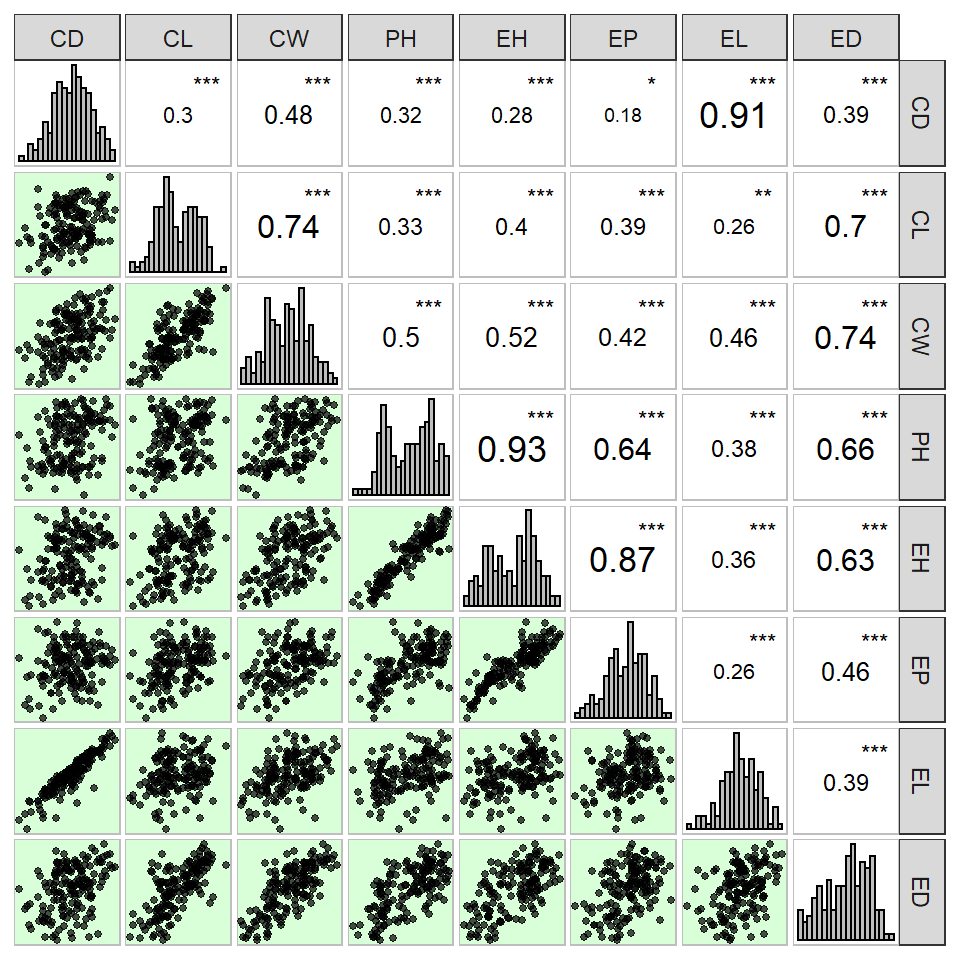

Capítulo 12 Relações lineares entre variáveis
Conhecer o grau de associação linear entre caracteres é de fundamental importância em um programa de melhoramento genético vegetal. Esta importância aumenta, principalmente se algum caractere desejável é de difícil mensuração, ou apresenta baixa herdabilidade. O coeficiente de correlação produto-momento de Pearson (1920), r, vem sendo amplamente utilizado para este fim. Embora o mérito desta análise seja atribuído à Karl Pearson, o método foi originalmente concebido por Francis Galton, que definiu o termo correlação como como o seguinte: duas variáveis são ditas correlacionadas quando a variação de uma é acompanhada na média, mais ou menos a variação da outra, e no mesmo sentido (Galton 1888).
12.1 Dados
Nesta sessão, e na sessão de análise multivariada iremos utilizar o conjunto de dados datage_2 do pacote metan. Para maiores informações veja ?data_ge2
12.2 Correlação linear
A estimativa do r leva em consideração a covariância entre duas variáveis, representadas aqui por XY dividia pelo produto dos respectivos desvios padrões de X e de Y, conforme o seguinte modelo:
\[ {\rm{r = }}\frac{{\sum\limits_{{\rm{i = 1}}}^{\rm{n}} {{\rm{[ (}}{{\rm{X}}_{\rm{i}}}{\rm{ - \bar X)(}}{{\rm{Y}}_{\rm{i}}}{\rm{ - \bar Y)] }}} }}{{\sqrt {\sum\limits_{{\rm{i = 1}}}^{\rm{n}} {{{{\rm{(}}{{\rm{X}}_{\rm{i}}}{\rm{ - \bar X)}}}^{\rm{2}}}} } \sqrt {\sum\limits_{{\rm{i = 1}}}^{\rm{n}} {{{{\rm{(}}{{\rm{Y}}_{\rm{i}}}{\rm{ - \bar Y)}}}^{\rm{2}}}} } }} \]
onde \({\rm{\bar X = }}\frac{{\rm{1}}}{{\rm{n}}}\sum\limits_{{\rm{i = 1}}}^{\rm{n}} {{{\rm{X}}_{\rm{i}}}}\) e \({\rm{\bar Y = }}\frac{{\rm{1}}}{{\rm{n}}}\sum\limits_{{\rm{i = 1}}}^{\rm{n}} {{{\rm{Y}}_{\rm{i}}}}\).
Esta sessão é focada em apresentar funções básicas e avançadas para visualização gráfica de associações e estimativas do coeficiente de correlação. Para este fim, utilizaremos o conjunto de dados datacor, criado anteriormente.
12.2.1 Visualização gráfica
A seguinte função proporciona uma visualização gráfica de todos os pares de correlação possíveis (scatter-plot)

12.2.2 Estimativa dos coeficientes de correlação
---------------------------------------------------------------------------
Pearson's correlation coefficient
---------------------------------------------------------------------------
CD CL CW PH EH EP EL ED
CD 1.000 0.300 0.484 0.315 0.281 0.175 0.912 0.390
CL 0.300 1.000 0.738 0.325 0.397 0.391 0.255 0.697
CW 0.484 0.738 1.000 0.505 0.519 0.425 0.458 0.737
PH 0.315 0.325 0.505 1.000 0.932 0.638 0.380 0.661
EH 0.281 0.397 0.519 0.932 1.000 0.870 0.363 0.630
EP 0.175 0.391 0.425 0.638 0.870 1.000 0.263 0.458
EL 0.912 0.255 0.458 0.380 0.363 0.263 1.000 0.385
ED 0.390 0.697 0.737 0.661 0.630 0.458 0.385 1.000
---------------------------------------------------------------------------
p-values for the correlation coefficients
---------------------------------------------------------------------------
CD CL CW PH EH EP EL ED
CD 0.00e+00 1.39e-04 1.54e-10 6.06e-05 3.90e-04 2.88e-02 1.97e-61 4.94e-07
CL 1.39e-04 0.00e+00 3.92e-28 3.45e-05 2.84e-07 4.55e-07 1.29e-03 4.74e-24
CW 1.54e-10 3.92e-28 0.00e+00 1.83e-11 3.76e-12 3.25e-08 1.81e-09 5.31e-28
PH 6.06e-05 3.45e-05 1.83e-11 0.00e+00 1.11e-69 3.10e-19 9.80e-07 5.66e-21
EH 3.90e-04 2.84e-07 3.76e-12 1.11e-69 0.00e+00 4.80e-49 3.28e-06 1.19e-18
EP 2.88e-02 4.55e-07 3.25e-08 3.10e-19 4.80e-49 0.00e+00 8.92e-04 1.83e-09
EL 1.97e-61 1.29e-03 1.81e-09 9.80e-07 3.28e-06 8.92e-04 0.00e+00 6.88e-07
ED 4.94e-07 4.74e-24 5.31e-28 5.66e-21 1.19e-18 1.83e-09 6.88e-07 0.00e+0012.2.3 Combinando visualização gráfica e numérica (I)
Na figura acima, os pontos observados são plotados na diagonal inferior. Na diagonal, é apresentada a estimativa da densidade Kernel (linha preta) e um histgrama de cada variável. A diagonal superior contém os coeficientes de correlação.
12.2.4 Combinando visualização gráfica e numérica (II)
A função corr_plot()do pacote metan retorna um gráfico semelhante ao anterior, no entanto possui diversas opções, tais como mudança no tamanho da letra dependendo da magnitude da correlação e indicação de cores para correlações significativas.

Figure 12.1: Scatter plot de uma matriz de correlação de Pearson
A função corr_plot() pode ser utilizada com o operador %>%. Em adição, é possível escolher as variáveis a serem plotadas. Para isto, basta digitar o nome das variáveis.
maize %>%
corr_plot(CD, EL, PERK, NKR, CW,
shape.point = 19,
size.point = 2,
alpha.point = 0.5,
alpha.diag = 0,
pan.spacing = 0,
col.sign = "gray",
alpha.sign = 0.3,
axis.labels = TRUE,
progress = FALSE)
Figure 12.2: Scatter plot de uma matriz de correlação de Pearson
maize %>%
corr_plot(CD, EL, PERK, NKR, CW,
shape.point = 21,
col.point = "black",
fill.point = "orange",
size.point = 2,
alpha.point = 0.6,
maxsize = 4,
minsize = 2,
smooth = TRUE,
col.smooth = "black",
col.sign = "cyan",
upper = "scatter",
lower = "corr",
diag.type = "density",
col.diag = "cyan",
pan.spacing = 0,
lab.position = "bl")Figure 12.3: Scatter plot de uma matriz de correlação de Pearson
12.2.5 Combinando visualização gráfica e numérica (III)
A função corrplot.mixed() do pacote corrplot36 também é uma boa opção para visualização gráfica, principalmente quando um grande número de combinações está disponível.
- Criando a matrix de correlação utilizando o conjunto de dados
datacor. - 8 variáveis | 28 combinações

12.2.6 Combinando visualização gráfica e numérica (IV)
- Criando a matrix de correlação utilizando o conjunto de dados dataset.
- 14 variáveis | 91 combinações
A função corrplot() do pacote corrplot permite uma poderosa personalização. Esta função tem a vantagem de apresentar um elevado número de combinações em um gráfico claro e intuitivo.
corrplot(cor2,
method = "pie",
p.mat = pval,
sig.level = 0.05,
insig = "blank",
type = "lower",
diag = F,
tl.col = "black",
tl.srt = 45)
Figure 12.4: Gráfico de pizza de uma matriz de correlação de Pearson
corrplot(cor2,
method = "ellipse",
p.mat = pval,
sig.level = 0.05,
insig = "blank",
type = "upper",
diag = F,
tl.col = "black",
tl.srt = 45)
12.3 Correlações genéticas
A função covcor_design() pode ser usada para calcular matrizes de correlação/(co) variância genéticas, fenotípicas e residuais através do método de Análise de Variância (ANOVA) usando delineamento de blocos completos casualizados (DBC) ou delineamento inteiramente casualizado (DIC).
As correlações fenotípicas \(r^p_{xy}\), genotípicas \(r^g_{xy}\) e residuais \(r^r_{xy}\) entre duas variáveis x e y são calculadas conforme segue.
\[ r^p_{xy} = \frac{cov^p_{xy}}{\sqrt{var^p_{x}var^p_{y}}} \ r^g_{xy} = \frac{cov^g_{xy}}{\sqrt{var^g_{x}var^g_{y}}} \ r^r_{xy} = \frac{cov^r_{xy}}{\sqrt{var^r_{x}var^r_{y}}} \]
Utilizando os quadrados médios (QM) obtidos da ANOVA, as variâncias (var) e covariâncias (cov) são calculadas da seguinte forma:
\[ cov^p_{xy} = [(QMT_{x+y} -QMT_x -QMT_y)/2]/r \\ var^p_x =QMT_x / r \\ var^p_y =QMT_y / r \]
\[ cov^r_{xy} = (QME_{x+y} - QME_x - QME_y)/2 \\ var^r_x = QME_x \\ var^r_y = QME_y \]
\[ cov^g_{xy} = [(cov^p_{xy} \times r) - cov^r_{xy}]/r \\ var^g_x = (MST_x - MSE_x)/r \\ var^g_y = (MST_x - MSE_y)/r \]
onde QMT é o quadrado médio para tratamento, QME é o quadrado médio do erro e r é o número de repetições/blocos. A função covcor_design() retorna uma lista com as matrizes de (co)variâncias e correlações. Matrizes específicas podem ser retornadas usando o tipo de argumento type. No exemplo abaixo, o coeficiente de correlação genotípico entre as variáveis PH, EH, NKE e TKW será computado para o ambiente A1, considerando um DBC.
maize %>%
filter(ENV == "A1") %>%
covcor_design(gen = GEN,
rep = REP,
resp = c(PH, EH, NKE, TKW),
type = "gcor") PH EH NKE TKW
PH 1.000000000 -0.006544623 0.2801806 0.2459377
EH -0.006544623 1.000000000 -0.7752497 0.7247684
NKE 0.280180560 -0.775249741 1.0000000 -0.5117645
TKW 0.245937657 0.724768430 -0.5117645 1.0000000group_by() e covcor_design()
12.4 Intervalo de confiança
12.4.1 Paramétrico
O intervalo de confiança para o coeficiente de correlação pode ser obtido utilizando a função cor.mtest() do pacote corrplot, conforme o seguinte exemplo.
12.4.2 Não paramétrico
Um estimador não paramétrico do intervalo de confiança do coeficiente de correlação de Pearson foi proposto por Olivoto et al. (2018). Este estimador é baseado no tamanho da amostra e força de associações e pode ser estimado usando a função corr_ci() do pacote metan. É possível estimar o intervalo de confiança declarando o tamanho da amostra (n) e o coeficiente de correlação (r), ou usando um dataframe. O código a seguir calcula o intervalo de confiança para os possíveis pares de correlação entre as variáveis que contém E no nome. Note o benefício do operador %>% neste caso.
12.5 Tamanho da amostra
Baseado no modelo proposto por Olivoto et al. (2018), o tamanho da amostra suficiente para a estimativa do coeficiente de correlação considerando um intervalo de confiança desejado é obtido pela função corr_ss(). Neste exemplo, vamos calcular o tamanho da amostra necessário para que uma correlação de 0.6 apresente uma semi-amplitude do intervalo de confiança igual a 0.1
-------------------------------------------------
Sample size planning for correlation coefficient
-------------------------------------------------
Level of significance: 5%
Correlation coefficient: 0.6
95% half-width CI: 0.1
Required sample size: 194
------------------------------------------------- 12.6 Correlação parcial
Em certos casos, o coeficiente de correlação linear simples pode nos levar a equívocos na interpretação da associação entre duas variáveis, pois este não considera a influência das demais variáveis contidas no conjunto de dados. O coeficiente de correlação parcial é uma técnica baseada em operações matriciais que nos permite identificar a associação entre duas variáveis retirando-se os efeitos das demais variáveis presentes (Anderson 2003) Uma maneira generalizada para a estimativa do coeficiente de correlação parcial entre duas variáveis (i e j) é por meio da matriz de correlação simples que envolve estas duas variáveis e m outras variáveis das quais queremos retirar o efeito. A estimativa do coeficiente de correlação parcial entre i e j excluído o efeito de m outras variáveis é dado por:
\[ {r_{ij.m} = \frac{{- {a_{ij}}}}{{\sqrt {{a_{ii}}{a_{jj}}}}}} \]
onde \(r_{ij.m}\) é o coeficiente de correlação parcial entre as variável i e j, sem o efeito das outras m outras variáveis; \(a_{ij}\) é o elemento da ordem ij da inversa da matriz de correlação simples; \(a_{ii}\) e \(a_{jj}\) são os elementos de ordens ii e jj, respectivamente, da inversa da matriz de correlação simples.
As matrizes de coeficientes de correlação linear e parcial podem ser facilmente obtida utilizando a função lpcor() do pacote metan. A entrada dos dados pode ser realizada de duas maneiras. (i) utilizando os dados com as observações de cada variável; ou (ii) utilizando uma matriz de correlação linear simples pré estimada. Em nosso exemplo, vamos utilziar os mesmos dados utilizados nas funções anteriores (datacor).
# A tibble: 28 x 5
Pairs linear partial t prob
<chr> <dbl> <dbl> <dbl> <dbl>
1 CD x CL 0.300 0.0767 0.936 0.351
2 CD x CW 0.484 0.125 1.53 0.129
3 CD x PH 0.315 0.0196 0.238 0.812
4 CD x EH 0.281 -0.0258 -0.314 0.754
5 CD x EP 0.175 -0.0121 -0.147 0.884
6 CD x EL 0.912 0.893 24.1 0
7 CD x ED 0.390 0.0108 0.131 0.896
8 CL x CW 0.738 0.465 6.40 0.00000000198
9 CL x PH 0.325 -0.309 -3.95 0.000121
10 CL x EH 0.397 0.256 3.22 0.00158
# ... with 18 more rowsA função retorna 3 objetos: linear.mat que contém a matriz de correlação linear simples; partial.mat que contém a matriz de correlações parciais, results que contém todas as combinações de correlação com seus respectivos testes de hipótese.
12.7 Análise de trilha
Nesta sessão, primeiramente uma breve introdução à análise de trilha é apresentada. Algumas dificuldades, como , por exemplo, a presença de multicolinearidade e possíveis soluções para contorná-la serão discutidas. Posteriormente exemplos numéricos serão realizados utilizando funções do pacote metan.
12.7.1 Introdução
A análise de trilha vem se destacando na área do melhoramento genético, pois a seleção para melhoria de um caractere desejável que possui difícil mensuração e baixa herdabilidade, pode ser realizada indiretamente por outro caractere, diretamente associado a este, mas que apresente alta herdabilidade e seja de fácil mensuração. Esta técnica é baseada em ideias originalmente desenvolvidas por Sewall Wright (Wright 1921), no entanto desde sua concepção até a consolidação do método, algumas divergências quanto a fidedignidade do método matemático que explica as relações de causa e efeito foram observadas. Em 1922, Henry E. Niles, em um artigo37 publicado na revista Genetics intitulado Correlation, Causation and Wright’s theory of path coefficients, fez uma crítica ao método proposto por Wright, afirmando que a base filosófica do método dos coeficientes de trilha era falha. Niles, testando o método de Wright, evidenciou em alguns de seus resultados coeficientes superiores a |1|, afirmando […]estes resultados são ridículos[…] e que Wright teria de fornecer provas bem mais convincentes do que ele estava apresentando Niles (1922).
No ano seguinte, 1923, Sewall Wright em seu artigo38 entitulado The theory of path coefficients: a reply to Niles’s criticism, publicado na mesma revista Genetics, consolida seu método ao concluir que Niles pareceu se basear em conceitos matemáticos incorretos, resultado de uma falha em reconhecer que um coeficiente de trilha não é uma função simétrica de duas variáveis, mas que ele necessariamente tem direção. Este autor conclui seu trabalho afirmando que a análise de trilha não fornece uma fórmula geral para deduzir relações causais a partir do conhecimento das correlações. Ela é, no entanto, dentro de certas limitações, um método de avaliar as consequências lógicas de uma hipótese de relação causal em um sistema de variáveis correlacionadas. Acrescenta ainda que as críticas oferecidas por Niles em nada invalidam a teoria do método ou sua aplicação (Wright 1923). Atualmente, o método estatístico é consolidado, e utilizado mundialmente em diversas áreas da ciência.
12.7.2 Estimação
A decomposição das correlações lineares em efeitos diretos e indiretos de um conjunto de p-variáveis explicativas é realizada o sistema de equações normais
\[ X'X\hat \beta = X'Y \]
que tem como resolução
\[ \hat \beta = X'X^{-1} X'Y \]
onde \(\hat \beta\) é o vetor dos coeficiente de regressão parcial (\(\hat \beta_1\), \(\hat \beta_2\), \(\hat \beta_3\),…,\(\hat \beta_p\)) para p + 1; \(X'X^{-1}\) é a inversa da matriz de correlação linear entre as variáveis explicativas e \(X'Y\) é a matriz de correlação de cada variável explicativa, com a variável dependente.
Após a estimativa dos coeficientes de regressão (\(\hat \beta_p\)), os efeitos diretos e indiretos do conjunto de p-variáveis explicativas podem ser estimados. Considere o seguinte exemplo, onde um conjunto de variáveis explicativas (a, b, c) são utilizadas para explicar as relações de causa e efeito na resposta de uma variável dependente (y). Após as estimativas dos coeficientes de regressão parcial (\(\hat \beta_1\), \(\hat \beta_2\) e \(\hat \beta_3\)), os efeitos diretos e indiretos de a sobre y são dados por:
\[ r_{a:y} = \hat \beta_1 + \hat \beta_{2_{ra:b}} + \hat \beta_{3_{ra:c}} \]
onde \(r_{a:y}\) é a correlação linear entre a e y, \(\hat \beta_1\) é o efeito direto de a em y; \(\hat \beta_{2_{ra:b}}\) é o efeito indireto de a em y via b e \(\hat \beta_{3_{ra:c}}\) é o efeito indireto de a em y via c. Regressões semelhantes são utilizadas para estimativa dos efeitos de b e c, conforme segue:
\[\begin{gather*} r_{b:y} = \hat \beta_{1_{rb:a}} + \hat \beta_2 + \hat \beta_{3_{rb:c}}\\ r_{c:y} = \hat \beta_{1_{rc:a}} + \hat \beta_{2_{rc:b}} + \hat \beta_3 \end{gather*}\]
Como exemplo numérico, vamos utilizar as variáveis PERK, EH, CDED como variáveis explicativas e a variável KW como dependente, do conjunto de dados maize. Para seleção destas variáveis, a função select() é utilizada.
x = maize %>% select(PERK, EH, CDED)
y = maize %>% select(KW)
xx = cor(x) # Correlação entre as variáveis explicativas
xy = cor(x, y) # Correlação das explicativas com a dependente
b = solve(xx) %*% xy # Estimativa dos coeficientes
PERK_KW_DIR = b[1] # Direto de PERK em KW
PERK_KW_EH = b[2] * xx[1,2] # Indireto de PERK em KW via EH
PERK_KW_CDED = b[3] * xx[1,3] # Indireto de PERK em KW via CDED
EH_KW_PERK = b[1] * xx[2,1] # Indireto de EH em KW via PERK
EH_KW_DIR = b[2] # Direto de EH em KW
EH_KW_CDED = b[3] * xx[2,3] # Indireto de EH em KW via CDED
CDED_KW_PERK = b[1] * xx[3,1] # Indireto de CDED em KW via PERK
CDED_KW_EH = b[2] * xx[3,2] # Indireto de CDED em KW via EH
CDED_KW_DIR = b[3] # Direto de CDED em KW
# Coeficientes de trilha (direto na diagonal, indireto fora da diagonal)
coeff = matrix(c(PERK_KW_DIR, PERK_KW_EH, PERK_KW_CDED,
EH_KW_PERK, EH_KW_DIR, EH_KW_CDED,
CDED_KW_PERK, CDED_KW_EH, CDED_KW_DIR),
ncol = 3)
rownames(coeff) <- colnames(coeff) <- c("PERK", "EH", "CDED")
coeff PERK EH CDED
PERK -0.10410823 0.002222624 0.05948542
EH -0.01473329 0.690110850 -0.04548514
CDED 0.09200901 0.010613425 -0.16102929Utilizando os conhecimentos acumulados até agora, estes mesmos coeficientes podem ser estimados de maneira mais “elegantemente”, utilizando o código abaixo.
n = ncol(xx)
Coeff <- data.frame(xx)
for (i in 1:n) {
for (j in 1:n) {
Coeff[j, i] <- b[j] * xx[j, i]
}
}
rownames(coeff) <- colnames(coeff) <- c("PERK", "EH", "CDED")
Coeff PERK EH CDED
PERK -0.10410823 0.002222624 0.05948542
EH -0.01473329 0.690110850 -0.04548514
CDED 0.09200901 0.010613425 -0.1610292912.7.3 Multicolinearidade
Embora esta análise revele associações de causa e efeito, sua estimativa é baseada em princípios de regressão múltipla. Assim, as estimativas dos parâmetros podem ser enviesadas devido a natureza complexa dos dados, em que a resposta da variável dependente está ligada a um grande número de variáveis explicativas, que são muitas vezes correlacionadas ou multicolineares entre si (Graham 2003). Assim, sempre que duas supostas variáveis explicativas se apresentam altamente associadas, é difícil estimar as relações de cada variável explicativa individualmente, uma vez que vários parâmetros resolvem o sistema de equações normais. A esta particularidade é atribuída o nome de multicolinearidade (Blalock 1963).
Os principais meios utilizados para identificar o grau de multicolinearidade em uma matriz de variáveis explicativas são os seguintes:
- Número de condição (CN): O número de condição é calculado pela razão entre o maior e menor autovalor (\(\lambda\)) da matriz de correlação \(X'X\), de acordo com a expressão
\[ {\rm{NC = }}\frac{{\lambda_{\rm{Max}}}}{{\lambda_{\rm{Min}}}} \]
O grau de multicolinearidade é considerado fraco se NC \(\leq\) 100, moderado se 100 \(\leq\) NC \(\leq\) 1000 e severo quando NC > 1000.
- Determinante da matriz \(X'X\) (D): O determinante da cada matriz de correlação é estimado pelo produto de seus respectivos autovalores, para \(\lambda_j > 0\), de acordo com a expressão
\[ \mathop D\nolimits_{{\boldsymbol{X'X}}} {\rm{ = }}\prod\limits_{j = 1}^p {\lambda j} \]
Um determinantes muito próximo a zero indica dependência linear entre as características explicativas, indicando problemas graves de multicolinearidade.
- Fator de inflação de variância (VIF): Os (VIFs) são utilizados para medir o quanto a variância dos coeficientes de regressão estimados (\(\hat \beta_k\)) foi inflada em comparação a quando os caracteres explicativos não são linearmente associados. A estimativa do VIF do k-ésimo elemento de \(\hat \beta\) é dada pela soma dos quocientes do quadrado de cada componente do autovetor pelo seu respectivo autovalor associado, de acordo com a expressão
\[ \mathop {{\rm{VIF}}}\nolimits_{\mathop \beta \nolimits_k } = \left( {\frac{{\mathop {{\rm{(AV}}}\nolimits_{KC1} {)^2}}}{{\lambda 1}} + \frac{{{{(\mathop {{\rm{AV}}}\nolimits_{KC2} )}^2}}}{{\lambda 2}} + ... + \frac{{{{(\mathop {{\rm{AV}}}\nolimits_{KCp} )}^2}}}{{\lambda p}}} \right) \]
onde \(\mathop {{\rm{VIF}}}\nolimits_{\mathop \beta \nolimits_k }\) é o fator de inflação de variância o k-ésimo elemento de \(\beta\) para k = 1, 2, …, p; \(\mathop {{\rm{EV}}}\nolimits_{KC{\rm{1}}}\) é o componente do k-ésimo autovetor para k = 1, 2, …, p e C = 1, 2, …, p; e \(\lambda\) é o autovalor associado ao respectivo autovetor para \(\lambda\) = 1, 2, …, p. Os VIFs também podem ser considerados como os elementos da diagonal da inversa da matriz \(X'X\). Considera-se que a presença de VIFs maiores que 10 é um indicativo de multicolinearidade .
12.7.3.1 Diagnóstico da multicolinearidade
A função colindiag() do pacote metan é utilizada para realizar o diagnóstico da multicolinearidade de uma matriz de correlação. Os códigos a seguir calculam um diagnóstico completo de colinearidade de uma matriz de correlação de características preditivas. Vários indicadores, como fator de inflação de variação, número de condição e determinante de matriz são considerados (T. Olivoto, Souza, et al. 2017; Olivoto et al. 2017) O diagnóstico pode ser realizado usando: (i) matrizes de correlação; (ii) quadros de dados ou (iii) um objeto agrupado passado de group_by().
- Usando uma matriz de correlação, estimada anteriormente
Severe multicollinearity in the matrix! Pay attention on the variables listed bellow
CN = 1830.678
Matrix determinant: 2.32e-05
Largest correlation: PH x EH = 0.932
Smallest correlation: CD x EP = 0.175
Number of VIFs > 10: 3
Number of correlations with r >= |0.8|: 3
Variables with largest weight in the last eigenvalues:
EH > PH > EP > CL > ED > CW > CD > EL - Usando um dataframe
Severe multicollinearity in the matrix! Pay attention on the variables listed bellow
CN = 1830.678
Matrix determinant: 2.32e-05
Largest correlation: PH x EH = 0.932
Smallest correlation: CD x EP = 0.175
Number of VIFs > 10: 3
Number of correlations with r >= |0.8|: 3
Variables with largest weight in the last eigenvalues:
EH > PH > EP > CL > ED > CW > CD > EL - Diagnóstico para cada nível do fator ENV
# A tibble: 4 x 2
ENV data
<fct> <list>
1 A1 <colindig>
2 A2 <colindig>
3 A3 <colindig>
4 A4 <colindig>12.7.3.2 Seleção de preditores com mínima multicolinearidade
A função non_collinear_vars() seleciona um conjunto de preditores com multicolinearidade mínima usando o fator de inflação de variação (VIF) como critério para remover variáveis colineares. O algoritmo irá: (i) calcular o valor VIF da matriz de correlação que contém as variáveis originais; (ii) ordenar os valores do VIF e excluir a variável com maior VIF; e (iii) iterar a etapa ii até que o valor VIF seja menor ou igual a um valor pré-estabelecido.
Parameter values
1 Predictors 10
2 VIF 7.16
3 Condition Number 56.797
4 Determinant 0.0008810515
5 Selected PERK, EP, CDED, NKR, PH, NR, TKW, EL, CD, ED
6 Removed EH, CL, CW, KW, NKE Parameter values
1 Predictors 4
2 VIF 2.934
3 Condition Number 11.248
4 Determinant 0.2400583901
5 Selected NKE, EH, CL, CW
6 Removed KWEm análise de trilha, o diagnóstico da multicolinearidade deve ser realizado na matriz de correlação das variáveis explicativas. No exemplo acima, supondo que a análise de trilha fosse realizada considerando a variável PH como dependente, o seguinte comando deveria ter sido utilizado para o diagnóstico da multicolinearidade.
multicol <- datacor %>% select(-PH) %>% colindiag()
12.7.4 Métodos para ajustar a multicolinearidade
Embora os problemas relacionados a multicolinearidade se apresente como uma dificuldade na estimativa de coeficientes de trilha, algumas medidas podem ser tomadas visando mitigar seus efeitos indesejáveis, quando esta for detectada pelos métodos acima citados. Sabe-se atualmente, que a exclusão das variáveis responsáveis por inflar a variância de um coeficiente de regressão é um dos métodos mais indicados para reduzir a multicolinearidade em matrizes de variáveis explicativas (T. Olivoto, Souza, et al. 2017). A identificação destas variáveis, no entanto, pode ser uma tarefa difícil. Recentemente, T. Olivoto, Nardino, et al. (2017) propuseram a utilização de procedimentos stepwise juntamente com análise de trilha sequencial visando identificar um conjunto de variáveis com alto poder explicativo, mas que não se apresentem altamente correlacionadas. Quando a exclusão das variáveis responsáveis não é um procedimento considerado pelo pesquisador, por exemplo, devido a um número reduzido de variáveis explicativa, ou pela importância em conhecer seus efeitos, uma terceira opção é realizar a análise de trilha com todas as variáveis explicativas, porém com a inclusão de um pequeno valor nos elementos da diagonal \(X'X\), conhecida como regressão em crista39. Este procedimento, no entanto superestima os efeitos diretos, principalmente daquelas variáveis com alto VIF. (T. Olivoto, Souza, et al. 2017).
12.7.5 Análise tradicional
Esta sessão está focada principalmente em três objetivos: (i) diagnóstico da multicolinearidade; (ii) seleção de variáveis preditoras; e (iii) estimação dos coeficientes de trilha. Embora esta seja a sequência correta a ser seguida para a estimativa dos coeficientes de trilha, utilizaremos somente a função path_coeff(), que possibilita todas estas abordagens. Para isto, o conjunto de dados maize será utilizado.
Com a função acima, os coeficientes de trilha foram estimados considerando a variável KW (massa de grãos por espiga) como dependente, e todas as outras variáveis numéricas do conjunto de dados como explicativas. A função summary() pode ser utilizada para resumir os resultados da análise. Note que os coeficientes foram estimados considerando todos os níveis dos fatores ENV, GEN, e REP.
A mensagem de aviso gerada pela função acima pode ser suprimidada utilizando o argumento verbose = FALSE
De acordo com o NC, VIF e determinante da matriz, a multicolinearidade na matriz das variáveis explicativa é severa. Por exemplo, foram observados oito VIFs > 10 e o determinante da matriz foi de \(8.619 \times 10^{-12}\). A análise dos autovalores-autovetores (pathtodas$weightvar) indicou que, em ordem de importância, as variáveis que mais contribuem para a multicolinearidadeque são: CL > ED > CDED > EH > CW > PH > NKE > EP > TKW > PERK > NR > EL > NKR > CD. Conforme discutido, temos basicamente duas opções para contornar os problemas da elevada multicolineridade em nossos dados. Excluir as variáveis responsáveis pela multicolinearidade, ou manter todas as variáveis e incluir um fator de correção na diagonal da matrix . Vamos começar pela última opção.
12.7.6 Incluindo um fator de correção (k)
A variância dos coeficientes de regressão é reduzida quando quando um valor k para \(0 < k \leq 1\) é incluído na diagonal da matriz de correlação \(X'X\). Com esta técnica, a estimativa dos coeficientes de regressão é dado por:
\[ \hat \beta = (X'X+Ik)^{-1} X'Y \]
A escolha da magnitude de k, no entanto, deve ser cautelosa. Sugere-se que o valor a ser incluído seja aquele menor possível que estabilize os coeficientes de regressão (\(\beta_p\)). Felizmente, grande parte deste trabalho já foi realizado quando utilizamos a função path_coeff() na sessão anterior. Um conjunto de estimativas de \(\beta_p\) foi estimado com 101 valores de k, (\(k = 0, 0.01, ..., 1\)) e representado graficamente.

Figure 12.5: Valores de beta obtidos com 101 valores de k
O gráfico acima nos proporciona uma interpretação sobre qual é o valor de k mais indicado a ser utilizado. Para fins didátidos, escolheremos, por enquanto, o valor de k igual a 0.04, valor no qual os coeficientes de regressão da maioria das variávies se estabiliza. Para incluir este valor de correção, utilizaremos novamente a função path_coeff(), no entanto, agora, incluiremos o argumento correction = 0.04.
Com a inclusão do fator de correção (k = 0.04) na diagonal de \(X'X\), a multicolinearidade foi classificada como moderada (NC = 141). Inevitavelmente, temos duas opções para obtermos menores níveis de multicollinearidade. A primeira é aumentar o valor de k, digamos, para 0.1. Isto iria reduzir ainda mais o nível de multicolinearidade em nossa matriz, no entanto, o viés na estimativa dos coeficientes aumentaria. A segunda (e mais razoável) opção, é a exclusão das variáveis que mais causam problemas de multicolinearidade. Por exemplo, podemos considerar as variáveis com maior peso nos últimos autovalores, ou aquelas com maior VIF. As variáveis CL e EL apresentam alta correlação (veja a seção estimativas dos coeficientes de correlação), assim poderíamos manter apenas uma destas variáveis. A mesma interpretação pode ser considerada para CDED. Esta é uma co-variável (razão do diâmetro do sabugo e diâmetro da espiga, CDED = CD/ED). Vamos considerar então a exclusão destas variáveis.
12.7.7 Excluindo variáveis
O ajuste do novo modelo excluindo estas variáveis é facilmente realizado. Para isto, iremos utilizar dois argumentos da função path_coeff() não vistos até agora: pred e exclude. As variáveis informadas em pred podem ser as variáveis preditoras (default) ou as variáveis a serem excluídas, se exclude = TRUE. Vamos ao exemplo.
path_exclude <-
maize %>%
path_coeff(resp = KW,
pred = c(PERK, EH, CDED),
exclude = TRUE,
verbose = FALSE)Abaixo, um resumo das três abordagens realizadas até agora, utilizando o resumo apresentado na tabela abaixo.
| Estatística | Convencional | Incluindo k | Excluindo variáveis |
|---|---|---|---|
| Número de Condição | 7866 | 141 | 125.7 |
| Determinante | 0 | 2.7e-07 | 1.452e-05 |
| Maior VIF | 665.12 | 14.76 | 13.2 |
| R2 | 0.988 | 0.966 | 0.982 |
| Residual | 0.011 | 0.033 | 0.017 |
Conforme também observado por Hoerl and Kennard (1970) e T. Olivoto, Souza, et al. (2017), a exclusão de variáveis responsáveis pela multicolinearidade foi mais eficiente que a inclusão do k, proporcionando menores níveis de multicolinearidade e maior precisão do modelo (maior \(R^2\) e menor residual). Os níveis de multicolinearidade ao excluir as variáveis ainda preocupam. Vimos que tanto a identificação das variáveis responsáveis pela multicolinearidae quanto o ajuste do modelo declarando preditores específicos é um procedimento relativamente simples utilização a função path_coeff(). Mas, e se algum procedimento estatistico-computacional facilitasse ainda mais essa tarefa? Vamos, a partir de agora, considerar isso.
T. Olivoto, Nardino, et al. (2017) sugeriram a utilização de regressões stepwise para seleção de um conjunto de preditores com minima multicolinearidade em análise de trilha. Esta opção está disponível na função path_coeff(). Baseado em um algoritmo heurístico iterativo executado pelo argumento brutstep = TRUE, um conjunto de preditores com mínima multicolienaridade é selecionado com base nos valores de VIF. Posteriormente, uma série de regressões stepwise são ajustadas. A primeira regressão stepwise é ajustada considerando \(p-1\) variáveis preditoras selecionadas, sendo p o número de variáveis selecionadas no processo iterativo. O segundo modelo ajusta uma regressão considerando \(p-2\) variávies selecionadas, e assim por diante até o último modelo, que considera apenas duas variáveis selecionadas. Vamos ao exemplo.
12.7.8 Seleção de variáveis em análise de trilha
--------------------------------------------------------------------------
The algorithm has selected a set of 10 predictors with largest VIF = 7.16.
Selected predictors: PERK EP CDED NKR PH NR TKW EL CD ED
A forward stepwise-based selection procedure will fit 8 models.
--------------------------------------------------------------------------
Adjusting the model 1 with 9 predictors (12.5% concluded)
Adjusting the model 2 with 8 predictors (25% concluded)
Adjusting the model 3 with 7 predictors (37.5% concluded)
Adjusting the model 4 with 6 predictors (50% concluded)
Adjusting the model 5 with 5 predictors (62.5% concluded)
Adjusting the model 6 with 4 predictors (75% concluded)
Adjusting the model 7 with 3 predictors (87.5% concluded)
Adjusting the model 8 with 2 predictors (100% concluded)
Done!
--------------------------------------------------------------------------
Summary of the adjusted models
--------------------------------------------------------------------------
Model AIC Numpred CN Determinant R2 Residual maxVIF
Model8 1232 2 1.57 0.95068 0.860 0.1402 1.05
Model7 1148 3 1.34 0.97871 0.919 0.0808 1.02
Model6 1129 4 21.07 0.17146 0.930 0.0705 5.71
Model5 1116 5 26.39 0.08049 0.936 0.0642 5.71
Model4 1103 6 35.70 0.03481 0.942 0.0582 5.71
Model3 1097 7 37.46 0.02618 0.944 0.0555 6.42
Model2 1098 8 45.48 0.00396 0.945 0.0550 6.80
Model1 1099 9 50.99 0.00216 0.945 0.0545 6.96
--------------------------------------------------------------------------Três objetos são criados por esta função: Summary, Models e Selectedpred. O objeto Summary contém um resumo do procedimento, listando o número do modelo, o valor do AIC, o diagnóstico da multicolinearidade e os valores de R2 e residual. O objeto Models, contém todos os modelos ajustados, e o objeto Selectedpred, contém o nome das variávies preditoras selecionadas no processo iterativo. Podemos notar que o algorítmo selecionou um conjunto com 10 preditores (PERK, EP, CDED, NKR, PH, NR, TKW, EL, CD, ED) que apresenta multicolinearidade em niveis aceitáveis. Assim, qualquer um destes modelos poderia ser utilizado sem maiores problemas em relação à isto. O procedimento stepwise realizado com diferentes números de variáveis selecionados também permite a seleção de um modelo mais parcimonio, tarefa que ficará a critério do pesquisador.
12.7.9 Análise de trilha para cada nível de um fator
Em alguns casos, é de interesse estimar os coeficientes de trilha para cada nível de um fator, por exemplo, para cada ambiente em um ensaio multi-ambiente. Utilizando o argumento by, isto é facilmente realizado. . Para fins didáticos vamos estimar os coeficientes para cada ambiente do conjunto de dados maize.
Weak multicollinearity.
Condition Number = 4.697
You will probably have path coefficients close to being unbiased.
Weak multicollinearity.
Condition Number = 2.296
You will probably have path coefficients close to being unbiased.
Weak multicollinearity.
Condition Number = 4.244
You will probably have path coefficients close to being unbiased.
Weak multicollinearity.
Condition Number = 1.884
You will probably have path coefficients close to being unbiased. 12.8 Correlação canônica
Correlações canônicas podem ser implementadas com a função can_corr(). Primeiro, renomearemos as variáveis relacionadas à planta PH EH e EP com o sufixo _PLA para mostrar a usabilidade do select helper contains().
data_cc <- rename(data_ge2,
PH_PLA = PH,
EH_PLA = EH,
EP_PLA = EP)
# Digitar nome das variáveis
cc1 <- can_corr(data_cc,
FG = c(PH_PLA, EH_PLA, EP_PLA),
SG = c(EL, ED, CL, CD, CW, KW))---------------------------------------------------------------------------
Matrix (correlation/covariance) between variables of first group (FG)
---------------------------------------------------------------------------
PH_PLA EH_PLA EP_PLA
PH_PLA 1.0000000 0.9318282 0.6384123
EH_PLA 0.9318282 1.0000000 0.8695460
EP_PLA 0.6384123 0.8695460 1.0000000
---------------------------------------------------------------------------
Collinearity within first group
---------------------------------------------------------------------------
---------------------------------------------------------------------------
Matrix (correlation/covariance) between variables of second group (SG)
---------------------------------------------------------------------------
EL ED CL CD CW KW
EL 1.0000000 0.3851451 0.2554068 0.9118653 0.4581728 0.6685601
ED 0.3851451 1.0000000 0.6974629 0.3897128 0.7371305 0.8241426
CL 0.2554068 0.6974629 1.0000000 0.3003636 0.7383379 0.4709310
CD 0.9118653 0.3897128 0.3003636 1.0000000 0.4840299 0.6259806
CW 0.4581728 0.7371305 0.7383379 0.4840299 1.0000000 0.7348622
KW 0.6685601 0.8241426 0.4709310 0.6259806 0.7348622 1.0000000
---------------------------------------------------------------------------
Collinearity within second group
---------------------------------------------------------------------------
---------------------------------------------------------------------------
Matrix (correlation/covariance) between FG and SG
---------------------------------------------------------------------------
EL ED CL CD CW KW
PH_PLA 0.3801960 0.6613148 0.3251648 0.3153910 0.5047388 0.7534439
EH_PLA 0.3626537 0.6302561 0.3971935 0.2805118 0.5193136 0.7029469
EP_PLA 0.2634237 0.4580196 0.3908239 0.1750448 0.4248098 0.4974193
---------------------------------------------------------------------------
Correlation of the canonical pairs and hypothesis testing
---------------------------------------------------------------------------
Var Percent Sum Corr Lambda Chisq DF p_val
U1V1 0.630438540 78.617161 78.61716 0.7940016 0.30668 177.29224 18 0.00000
U2V2 0.163384310 20.374406 98.99157 0.4042083 0.82985 27.97651 10 0.00182
U3V3 0.008086721 1.008433 100.00000 0.0899262 0.99191 1.21794 4 0.87514
---------------------------------------------------------------------------
Canonical coefficients of the first group
---------------------------------------------------------------------------
U1 U2 U3
PH_PLA 2.609792 5.490798 7.575090
EH_PLA -2.559005 -7.646096 -12.812234
EP_PLA 1.191023 2.428742 6.604968
---------------------------------------------------------------------------
Canonical coefficients of the second group
---------------------------------------------------------------------------
V1 V2 V3
EL -0.01008726 -1.0481893 0.60553720
ED 0.14629899 0.7853469 -1.30457763
CL -0.09112023 -1.2989864 -0.07497186
CD -0.29105227 1.1513083 -1.50589651
CW -0.12527616 -0.0361706 0.21180796
KW 1.16041981 -0.1022916 1.34278026
---------------------------------------------------------------------------
Canonical loads of the first group
---------------------------------------------------------------------------
U1 U2 U3
PH_PLA 0.9856022 -0.08351129 -0.1470178
EH_PLA 0.9085216 -0.41771278 -0.0102277
EP_PLA 0.6319736 -0.71449671 0.3001730
---------------------------------------------------------------------------
Canonical loads of the second group
---------------------------------------------------------------------------
V1 V2 V3
EL 0.4759982 -0.11260907 -0.2944636
ED 0.8294407 -0.18663860 -0.4477426
CL 0.3749015 -0.74801793 -0.4937819
CD 0.3951578 0.02985218 -0.5415818
CW 0.6225367 -0.41451273 -0.2698904
KW 0.9570820 -0.07344796 -0.1498587# Use select helpers
cc2 <- can_corr(data_cc,
FG = contains("_PLA"),
SG = c(EL, ED, CL, CD, CW, KW))---------------------------------------------------------------------------
Matrix (correlation/covariance) between variables of first group (FG)
---------------------------------------------------------------------------
PH_PLA EH_PLA EP_PLA
PH_PLA 1.0000000 0.9318282 0.6384123
EH_PLA 0.9318282 1.0000000 0.8695460
EP_PLA 0.6384123 0.8695460 1.0000000
---------------------------------------------------------------------------
Collinearity within first group
---------------------------------------------------------------------------
---------------------------------------------------------------------------
Matrix (correlation/covariance) between variables of second group (SG)
---------------------------------------------------------------------------
EL ED CL CD CW KW
EL 1.0000000 0.3851451 0.2554068 0.9118653 0.4581728 0.6685601
ED 0.3851451 1.0000000 0.6974629 0.3897128 0.7371305 0.8241426
CL 0.2554068 0.6974629 1.0000000 0.3003636 0.7383379 0.4709310
CD 0.9118653 0.3897128 0.3003636 1.0000000 0.4840299 0.6259806
CW 0.4581728 0.7371305 0.7383379 0.4840299 1.0000000 0.7348622
KW 0.6685601 0.8241426 0.4709310 0.6259806 0.7348622 1.0000000
---------------------------------------------------------------------------
Collinearity within second group
---------------------------------------------------------------------------
---------------------------------------------------------------------------
Matrix (correlation/covariance) between FG and SG
---------------------------------------------------------------------------
EL ED CL CD CW KW
PH_PLA 0.3801960 0.6613148 0.3251648 0.3153910 0.5047388 0.7534439
EH_PLA 0.3626537 0.6302561 0.3971935 0.2805118 0.5193136 0.7029469
EP_PLA 0.2634237 0.4580196 0.3908239 0.1750448 0.4248098 0.4974193
---------------------------------------------------------------------------
Correlation of the canonical pairs and hypothesis testing
---------------------------------------------------------------------------
Var Percent Sum Corr Lambda Chisq DF p_val
U1V1 0.630438540 78.617161 78.61716 0.7940016 0.30668 177.29224 18 0.00000
U2V2 0.163384310 20.374406 98.99157 0.4042083 0.82985 27.97651 10 0.00182
U3V3 0.008086721 1.008433 100.00000 0.0899262 0.99191 1.21794 4 0.87514
---------------------------------------------------------------------------
Canonical coefficients of the first group
---------------------------------------------------------------------------
U1 U2 U3
PH_PLA 2.609792 5.490798 7.575090
EH_PLA -2.559005 -7.646096 -12.812234
EP_PLA 1.191023 2.428742 6.604968
---------------------------------------------------------------------------
Canonical coefficients of the second group
---------------------------------------------------------------------------
V1 V2 V3
EL -0.01008726 -1.0481893 0.60553720
ED 0.14629899 0.7853469 -1.30457763
CL -0.09112023 -1.2989864 -0.07497186
CD -0.29105227 1.1513083 -1.50589651
CW -0.12527616 -0.0361706 0.21180796
KW 1.16041981 -0.1022916 1.34278026
---------------------------------------------------------------------------
Canonical loads of the first group
---------------------------------------------------------------------------
U1 U2 U3
PH_PLA 0.9856022 -0.08351129 -0.1470178
EH_PLA 0.9085216 -0.41771278 -0.0102277
EP_PLA 0.6319736 -0.71449671 0.3001730
---------------------------------------------------------------------------
Canonical loads of the second group
---------------------------------------------------------------------------
V1 V2 V3
EL 0.4759982 -0.11260907 -0.2944636
ED 0.8294407 -0.18663860 -0.4477426
CL 0.3749015 -0.74801793 -0.4937819
CD 0.3951578 0.02985218 -0.5415818
CW 0.6225367 -0.41451273 -0.2698904
KW 0.9570820 -0.07344796 -0.1498587$$
References
Anderson, T. W. 2003. An introduction to multivariate statistical analysis. 3rd ed. Wiley-Interscience.
Blalock, H M. 1963. “Correlated {Independent} {Variables}: {The} {Problem} of {Multicollinearity}.” Social Forces 42 (2): 233–37. https://doi.org/10.1093/sf/42.2.233.
Galton, Francis. 1888. “Co-relations and their measurement, chiefly from anthropometric data.” Proceedings of the Royal Society of London 45 (273-279): 135–45. http://rspl.royalsocietypublishing.org/content/45/273-279/135.full.pdf.
Graham, Michael H. 2003. “Confronting Multicollinearity in Ecological Multiple Regression.” Ecology 84 (11): 2809–15. https://doi.org/10.1890/02-3114.
Hoerl, Arthur E., and Robert W. Kennard. 1970. “Ridge Regression: Biased Estimation for Nonorthogonal Problems.” Technometrics 12 (1): 55–67. https://doi.org/10.1080/00401706.1970.10488634.
Niles, Henry E. 1922. “Correlation, Causation and Wright’s Theory of "Path Coefficients".” Genetics 7 (3): 258–73. http://www.ncbi.nlm.nih.gov/pmc/articles/PMC1200533/.
Olivoto, Tiago, Maicon Nardino, Ivan Ivan Ricardo Carvalho, Diego Nicolau Follmann, Maurício Ferrari, Alan Júnior de Pelegrin, Vinícius Jardel Szareski, Antônio Costa de Oliveira, Braulio Otomar Caron, and Velcio Queiroz de Souza. 2017. “Optimal sample size and data arrangement method in estimating correlation matrices with lesser collinearity: A statistical focus in maize breeding.” African Journal of Agricultural Research 12 (2): 93–103. https://doi.org/10.5897/AJAR2016.11799.
Olivoto, T., A. D. C Lúcio, V. Q. Souza, M. Nardino, M. I. Diel, B. G. Sari, D .K. Krysczun, D. Meira, and C. Meier. 2018. “Confidence interval width for Pearson’s correlation coefficient: a Gaussian-independent estimator based on sample size and strength of association.” Agronomy Journal 110 (1): 1–8. https://doi.org/10.2134/agronj2017.09.0566.
Olivoto, T., M. Nardino, I. R. Carvalho, D. N. Follmann, M. Ferrari, V. J. Szareski, A. J. de Pelegrin, and V. Q. de Souza. 2017. “REML/BLUP and sequential path analysis in estimating genotypic values and interrelationships among simple maize grain yield-related traits.” Genetics and Molecular Research 16 (1): gmr16019525. https://doi.org/10.4238/gmr16019525.
Olivoto, T., V. Q. Souza, M. Nardino, I. R. Carvalho, M. Ferrari, A. J. Pelegrin, V. J. Szareski, and D. Schmidt. 2017. “Multicollinearity in path analysis: a simple method to reduce its effects.” Agronomy Journal 109 (1): 131–42. https://doi.org/10.2134/agronj2016.04.0196.
Pearson, K. 1920. “Notes on the History of Correlation.” Biometrika 13 (1): 25–45. https://doi.org/10.2307/2331722.
Wright, Sewall. 1921. “Correlation and causation.” Journal of Agricultural Research 20 (7): 557–85. http://www.ssc.wisc.edu/soc/class/soc952/Wright/Wright{\_}Correlation and Causation.pdf.
Wright, Sewall. 1923. “The Theory of Path Coefficients a Reply to Niles’s Criticism.” Genetics 8 (3): 239–55. http://www.ncbi.nlm.nih.gov/pmc/articles/PMC1200747/.
https://cran.r-project.org/web/packages/corrplot/vignettes/corrplot-intro.html↩︎
https://www.ncbi.nlm.nih.gov/pmc/articles/PMC1200533/pdf/258.pdf↩︎
https://www.genetics.org/content/genetics/8/3/239.full.pdf↩︎
A regressão em crista é conhecida como ridge regression e prossegue adicionando um pequeno valor, k, aos elementos diagonais da matriz de correlação. É aqui que a regressão em crista recebe seu nome, pois a diagonal de uma na matriz de correlação pode ser vista como uma crista, ou cumieira (Hoerl and Kennard 1976)↩︎